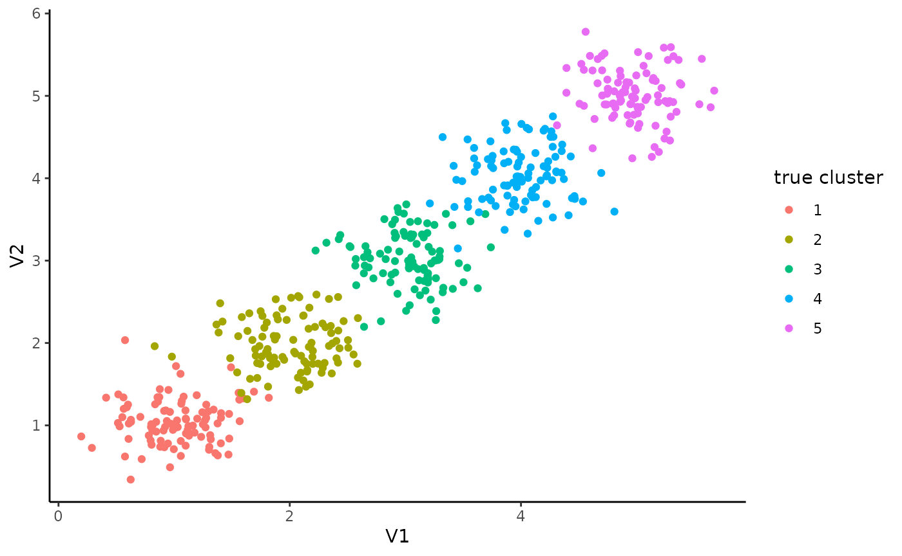

basic usage
Aviezer Lifshitz
2019-09-04
usage.RmdBasic usage of the package.
Basic usage
First, let’s create 5 clusters normally distributed around 1 to 5, with sd of 0.3:
## # A tibble: 500 x 4
## id V1 V2 true_clust
## <int> <dbl> <dbl> <int>
## 1 1 0.808 1.67 1
## 2 2 1.11 0.899 1
## 3 3 0.934 0.791 1
## 4 4 0.754 1.75 1
## 5 5 0.829 0.871 1
## 6 6 0.249 1.07 1
## 7 7 0.833 0.695 1
## 8 8 1.20 0.878 1
## 9 9 1.58 1.68 1
## 10 10 0.727 0.722 1
## # … with 490 more rowsThis is how our data looks like:
data %>% ggplot(aes(x=V1, y=V2, color=factor(true_clust))) +
geom_point() +
scale_color_discrete(name='true cluster')
Now we can cluster it using kmeans++:
data_for_clust <- data %>% select(id, starts_with('V'))
km <- TGL_kmeans_tidy(data_for_clust,
k=5,
metric='euclid',
verbose=TRUE)## id column: id## KMEans: will generate seeds
## KMeans into generate seeds
## at seed 0
## add new core from 243 to 0
## at seed 1
## done update min distance
## seed range 350 450
## picked up 58 dist was 1.67974
## add new core from 58 to 1
## at seed 2
## done update min distance
## seed range 300 400
## picked up 434 dist was 1.28292
## add new core from 434 to 2
## at seed 3
## done update min distance
## seed range 250 350
## picked up 100 dist was 0.649649
## add new core from 100 to 3
## at seed 4
## done update min distance
## seed range 200 300
## picked up 367 dist was 0.617641
## add new core from 367 to 4
## KMEans: reassign after init
## KMEans: iter 0
## KMEans: iter 1 changed 3
## KMEans: iter 1
## KMEans: iter 2 changed 3
## KMEans: iter 2
## KMEans: iter 3 changed 0The returned list contains 3 fields:
## [1] "centers" "cluster" "size"km$centers contains a tibble with clust column and the cluster centers:
## # A tibble: 5 x 3
## clust V1 V2
## <int> <dbl> <dbl>
## 1 1 3.03 3.06
## 2 2 4.98 4.99
## 3 3 4.04 4.01
## 4 4 0.989 0.977
## 5 5 2.03 2.00clusters are numbered according to order_func (see ‘Custom cluster ordering’ section).
km$cluster contains tibble with id column with the observation id (1:n if no id column was supplied), and clust column with the observation assigned cluster:
## # A tibble: 500 x 2
## id clust
## <chr> <int>
## 1 1 4
## 2 2 4
## 3 3 4
## 4 4 4
## 5 5 4
## 6 6 4
## 7 7 4
## 8 8 4
## 9 9 5
## 10 10 4
## # … with 490 more rowskm$size contains tibble with clust column and n column with the number of points in each cluster:
## # A tibble: 5 x 2
## clust n
## <int> <int>
## 1 1 99
## 2 2 99
## 3 3 101
## 4 4 101
## 5 5 100We can now check our clustering performance - fraction of observations that were classified correctly (Note that match_clusters function is internal to the package and is used only in this vignette):
d <- tglkmeans:::match_clusters(data, km, 5)
sum(d$true_clust == d$new_clust, na.rm=TRUE) / sum(!is.na(d$new_clust))## [1] 0.986And plot the results:
d %>% ggplot(aes(x=V1, y=V2, color=factor(new_clust), shape=factor(true_clust))) +
geom_point() +
scale_color_discrete(name='cluster') +
scale_shape_discrete(name='true cluster') +
geom_point(data=km$centers, size=7, color='black', shape='X')
Custom cluster ordering
By default, the clusters where ordered using the following function: hclust(dist(cor(t(centers)))) - hclust of the euclidian distance of the correlation matrix of the centers.
We can supply our own function to order the clusters using reorder_func argument. The function would be applied to each center and he clusters would be ordered by the result.
km <- TGL_kmeans_tidy(data %>% select(id, starts_with('V')),
k=5,
metric='euclid',
verbose=FALSE,
reorder_func=median)
km$centers## # A tibble: 5 x 3
## clust V1 V2
## <int> <dbl> <dbl>
## 1 1 0.989 0.977
## 2 2 2.03 2.00
## 3 3 3.03 3.06
## 4 4 4.04 4.01
## 5 5 4.98 4.99Missing data
tglkmeans can deal with missing data, as long as at least one dimension is not missing. for example:
## # A tibble: 500 x 4
## id V1 V2 true_clust
## <int> <dbl> <dbl> <int>
## 1 1 0.808 1.67 1
## 2 2 1.11 0.899 1
## 3 3 0.934 0.791 1
## 4 4 0.754 1.75 1
## 5 5 NA 0.871 1
## 6 6 NA 1.07 1
## 7 7 0.833 0.695 1
## 8 8 1.20 0.878 1
## 9 9 1.58 1.68 1
## 10 10 0.727 0.722 1
## # … with 490 more rowskm <- TGL_kmeans_tidy(data %>% select(id, starts_with('V')),
k=5,
metric='euclid',
verbose=FALSE)
d <- tglkmeans:::match_clusters(data, km, 5)
sum(d$true_clust == d$new_clust, na.rm=TRUE) / sum(!is.na(d$new_clust))## [1] 0.974and plotting the results (without the NA’s) we get:
d %>% ggplot(aes(x=V1, y=V2, color=factor(new_clust), shape=factor(true_clust))) +
geom_point() +
scale_color_discrete(name='cluster') +
scale_shape_discrete(name='true cluster') +
geom_point(data=km$centers, size=7, color='black', shape='X')## Warning: Removed 100 rows containing missing values (geom_point).
High dimensions
Let’s move to higher dimensions (and higher noise):
data <- simulate_data(n=100, sd=0.3, nclust=30, dims=300)
km <- TGL_kmeans_tidy(data %>% select(id, starts_with('V')),
k=30,
metric='euclid',
verbose=FALSE)d <- tglkmeans:::match_clusters(data, km, 30)
sum(d$true_clust == d$new_clust, na.rm=TRUE) / sum(!is.na(d$new_clust))## [1] 1Comparison with R vanilla kmeans
Let’s compare it to R vanilla kmeans:
km_standard <- kmeans(data %>% select(starts_with('V')), 30)
km_standard$clust <- tibble(id = 1:nrow(data), clust=km_standard$cluster)
d <- tglkmeans:::match_clusters(data, km_standard, 30)
sum(d$true_clust == d$new_clust, na.rm=TRUE) / sum(!is.na(d$new_clust))## [1] 0.7142857We can see that kmeans++ clusters siginifcantly better than R vannila kmeans.
Random seed
we can set the seed for the c++ random number generator, for reproducable results:
km1 <- TGL_kmeans_tidy(data %>% select(id, starts_with('V')),
k=30,
metric='euclid',
verbose=FALSE,
seed=17)
km2 <- TGL_kmeans_tidy(data %>% select(id, starts_with('V')),
k=30,
metric='euclid',
verbose=FALSE,
seed=17)
all(km1$centers[, -1] == km2$centers[, -1])## [1] TRUE